Hello, I'm
Falahudin Azizi
Mahasiswa Program Studi S1 Manajemen Universitas Mitra Bangsa dengan latar belakang Teknik Jaringan Komputer dan Telekomunikasi (TJKT). Memiliki pengalaman sebagai IT Support di BRIN PUSPIPTEK dan KOPINDOSAT serta pengalaman membangun proyek jaringan RT/RW Net di lingkungan sekolah.
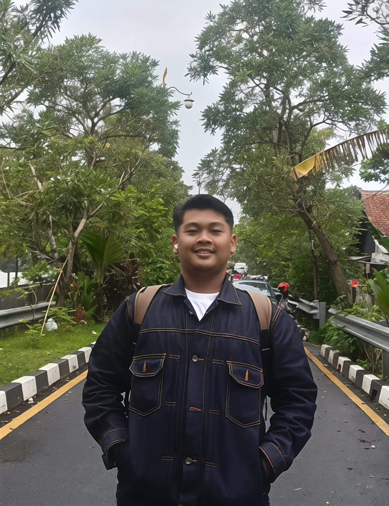
IT Support
Technical Support
Networking
MikroTik
Management
Business Student
0+
Pengalaman Magang
0+
Project RT/RW Net dan Lainnya
0+
Kompetensi Teknis
0%
Semangat Belajar
Tentang Saya
Mahasiswa yang memiliki minat dalam bidang teknologi informasi, jaringan komputer, dan manajemen bisnis.
Halo, Saya
Falahudin Azizi
IT Support • Computer Networking • Business Management Student
Saya merupakan mahasiswa Program Studi S1 Manajemen Universitas Mitra Bangsa dengan latar belakang pendidikan Teknik Jaringan Komputer dan Telekomunikasi (TJKT). Saya memiliki minat yang tinggi pada bidang IT Support, Computer Networking, Digital Business, dan Business Management.
Melalui pengalaman magang di BRIN PUSPIPTEK dan KOPINDOSAT sebagai IT Support, saya memperoleh pengalaman dalam maintenance komputer, troubleshooting hardware dan software, instalasi aplikasi, konfigurasi jaringan, serta memberikan dukungan teknis kepada pengguna.
Riwayat Pendidikan
Perjalanan pendidikan yang membentuk kompetensi saya dalam bidang teknologi informasi dan manajemen bisnis.

Universitas Mitra Bangsa
S1 Manajemen
Mempelajari Manajemen Bisnis, Digital Business, Entrepreneurship, Human Resource Management, Strategic Management, Business Analytics, serta pengembangan kemampuan kepemimpinan.

SMK Negeri 1 Gunung Sindur
Teknik Jaringan Komputer dan Telekomunikasi
Mempelajari Computer Networking, MikroTik, Cisco, Fiber Optic, Windows, Linux, Server, Troubleshooting, serta membangun proyek RT/RW Net.
Pengalaman Magang
Pengalaman profesional yang membentuk kompetensi saya sebagai IT Support dan Computer Networking.
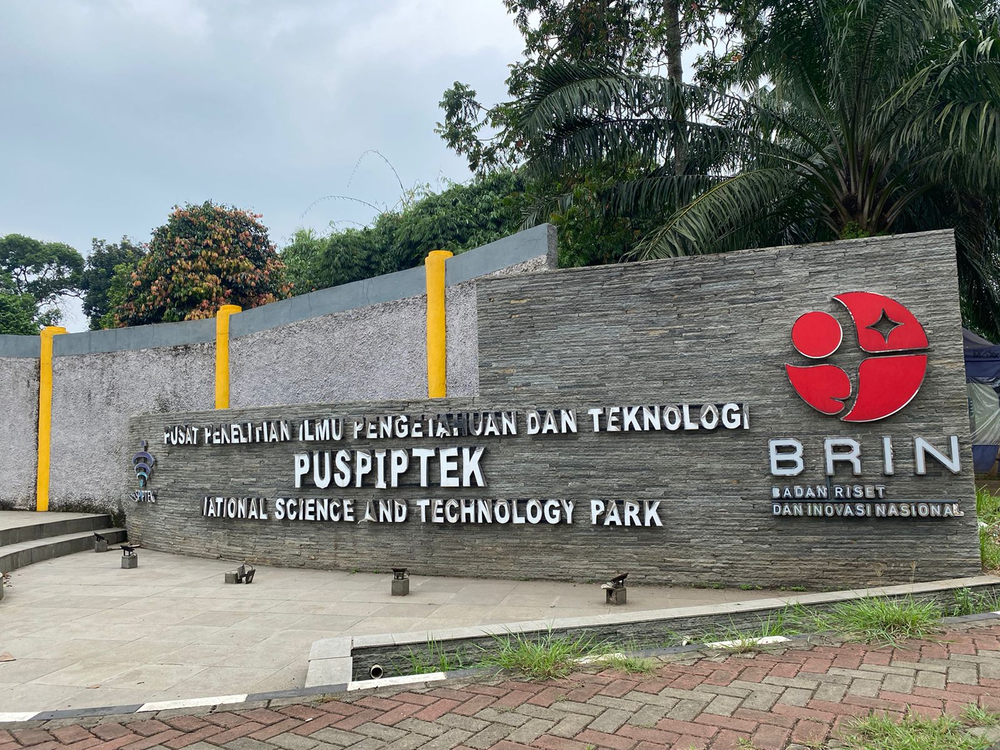
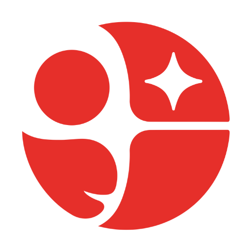
BRIN PUSPIPTEK
IT Support Intern
Melaksanakan maintenance komputer, instalasi Windows, troubleshooting hardware dan software, konfigurasi jaringan LAN, inventarisasi perangkat IT, serta memberikan dukungan teknis kepada pengguna.
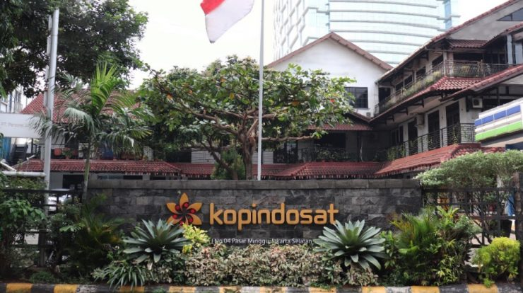
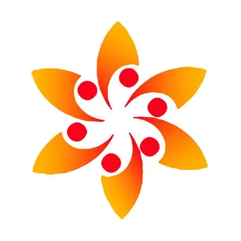
KOPINDOSAT
IT Support Intern
Memberikan layanan helpdesk, instalasi software, maintenance komputer, troubleshooting jaringan, printer sharing, konfigurasi perangkat jaringan, dan dukungan operasional pengguna.
Project Unggulan
Beberapa proyek yang telah saya kerjakan selama pendidikan, magang, dan pengembangan diri.
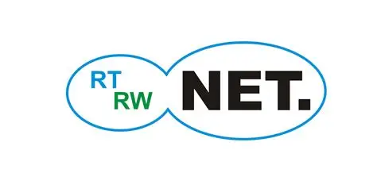
CompletedRT/RW Net Development
Network Infrastructure
Merancang dan membangun jaringan RT/RW Net mulai dari survei lokasi, instalasi kabel, konfigurasi MikroTik, Access Point, hingga monitoring jaringan.
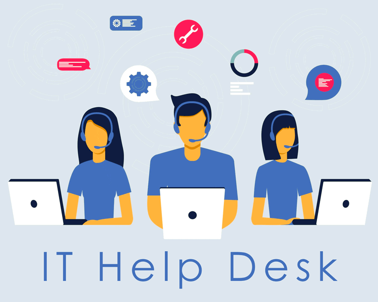
CompletedIT Support Helpdesk
Technical Support
Memberikan dukungan teknis, maintenance komputer, instalasi software, serta troubleshooting hardware dan software.
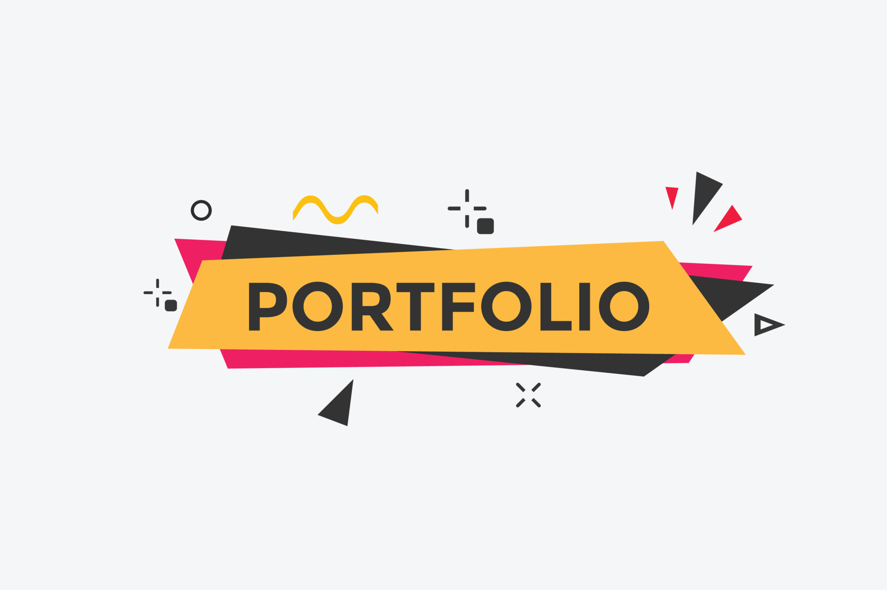
On GoingPortfolio Premium
Web Development
Membangun website portfolio modern menggunakan HTML, CSS, JavaScript, Glassmorphism, dan Batik Mega Mendung.
Kompetensi Profesional
Kemampuan yang saya miliki diperoleh melalui pendidikan, pengalaman magang, serta berbagai proyek di bidang teknologi informasi.
IT Support
95%Maintenance komputer, instalasi software, helpdesk, dan troubleshooting hardware maupun software.
Computer Networking
93%Konfigurasi jaringan LAN, routing, switching, dan troubleshooting jaringan.
MikroTik
92%Konfigurasi Router, Hotspot, Firewall, Bandwidth Management, Queue, dan Monitoring.
Hardware Maintenance
90%Perawatan komputer, pergantian komponen, perbaikan ringan, serta pemeriksaan perangkat.
Business Management
88%Perencanaan, organisasi, kepemimpinan, dan pengambilan keputusan bisnis.
Digital Business
86%Pemanfaatan teknologi digital untuk mendukung proses bisnis modern.
Keunggulan Personal
Kemampuan interpersonal yang mendukung produktivitas dan profesionalisme.
Problem Solving
Mampu menganalisis masalah dan memberikan solusi secara efektif.
Team Work
Terbiasa bekerja sama dalam tim maupun secara mandiri.
Communication
Mampu berkomunikasi secara efektif dengan berbagai pihak.
Fast Learner
Cepat memahami teknologi baru dan mudah beradaptasi dengan lingkungan kerja.
Discipline
Memiliki komitmen tinggi terhadap tanggung jawab dan target pekerjaan.
Time Management
Mampu mengatur waktu dan menyelesaikan pekerjaan secara tepat waktu.
Software & Teknologi
Berbagai software dan teknologi yang saya gunakan dalam pembelajaran, proyek, dan pengalaman magang.
MikroTik
Routing, Firewall, Hotspot, Queue Management.
Cisco Packet Tracer
Simulasi jaringan, routing, switching, dan topologi jaringan.
Microsoft Windows
Instalasi, maintenance, dan troubleshooting sistem operasi.
Visual Studio Code
Pengembangan website menggunakan HTML, CSS, dan JavaScript.
Microsoft Office
Microsoft Word, Excel, PowerPoint, dan Outlook.
Canva
Pembuatan desain presentasi, poster, dan konten digital.
Galeri Pengalaman & Project
Dokumentasi kegiatan magang, proyek jaringan, serta aktivitas akademik yang telah saya kerjakan.


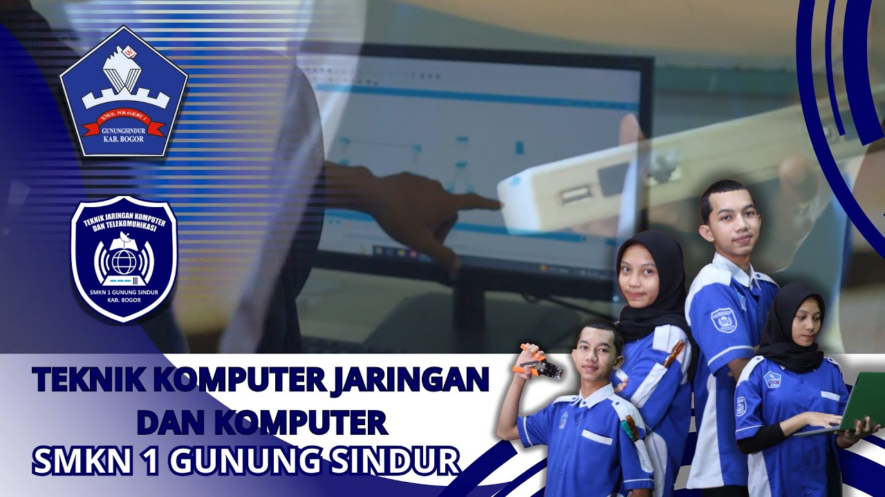
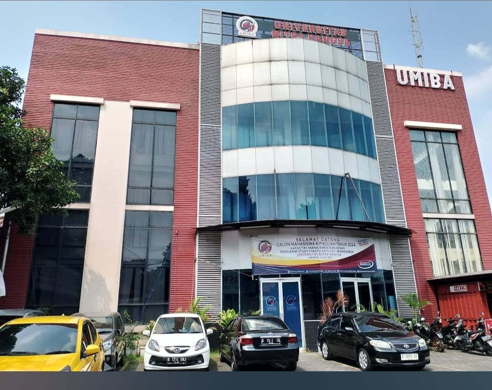
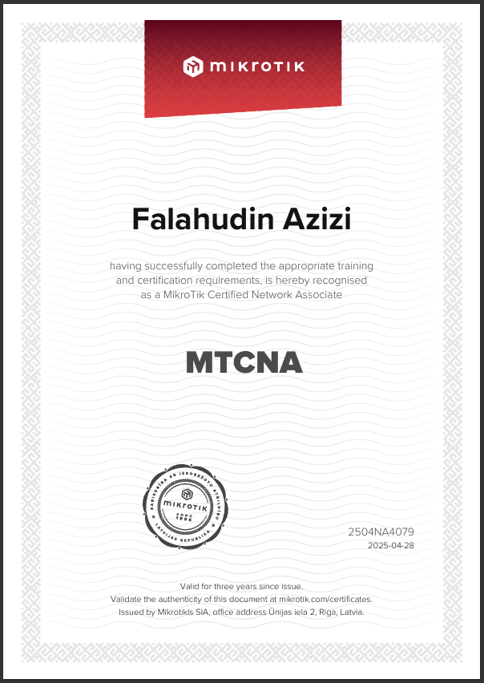
RT/RW NET DEVELOPMENT
Merancang dan membangun jaringan RT/RW Net mulai dari proses survei lokasi, perencanaan topologi, instalasi perangkat jaringan, konfigurasi MikroTik, pemasangan access point, pengujian koneksi, hingga monitoring dan pemeliharaan jaringan.
2+
Pengalaman Magang
2+
Project RT/RW Net dan Lainnya
8+
Kompetensi
100%
Semangat Belajar
Mari Terhubung
Saya terbuka untuk kesempatan magang, pekerjaan, kolaborasi, maupun diskusi mengenai teknologi informasi, computer networking, dan manajemen bisnis.
Let's Work Together
Jangan ragu untuk menghubungi saya apabila Anda memiliki kesempatan magang, pekerjaan, proyek, maupun kolaborasi.
Location
Bogor, Jawa Barat, IndonesiaPhone
+62 858-9273-9615Mari Berkolaborasi
Saya siap berkontribusi dalam bidang IT Support, Computer Networking, Digital Business, maupun proyek pengembangan teknologi informasi.